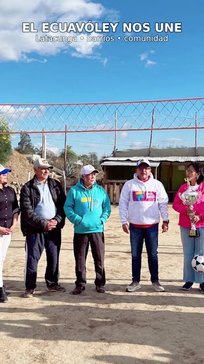

Convivencia
Los partidos reúnen a jugadores y espectadores, fortaleciendo la convivencia y la participación comunitaria.
Un sitio educativo sobre este deporte tradicional del Ecuador.
El ecuavóley es un deporte tradicional del Ecuador. Su práctica se difundió en canchas barriales, espacios públicos y encuentros entre comunidades.
No existe una fecha única y universalmente aceptada para su origen. Por ello, en este sitio se presenta su importancia cultural sin atribuirle una fecha exacta de creación.

Los partidos reúnen a jugadores y espectadores, fortaleciendo la convivencia y la participación comunitaria.
Es una práctica deportiva vinculada con la identidad cultural ecuatoriana y con las tradiciones locales.